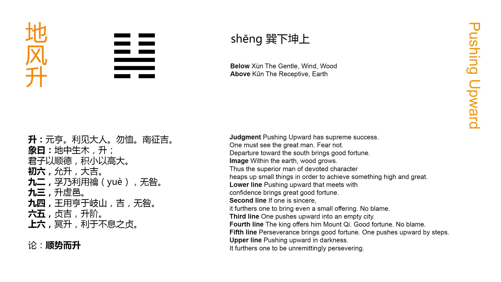

Chinese: shēng 升 ䷭

Shēng ䷭ indicates that (under its conditions) there will be great progress and success. Seeking by (the qualities implied in it) to meet with the great man, its subject need have no anxiety. Advance to the south will be fortunate.
1. The first SIX, divided, shows its subject advancing upwards with the welcome (of those above him). There will be great good fortune.
䷭ changing to ䷊
Matching Line 1 in Adjacent Hexagram: ䷬
2. The second NINE, undivided, shows its subject with that sincerity which will make even the (small) offerings of the vernal sacrifice acceptable. There will be no error.
䷭ changing to ䷎
Matching Line 2 in Adjacent Hexagram: ䷬
3. The third NINE, undivided, shows its subject ascending upwards (as into) an empty city.
䷭ changing to ䷆
Matching Line 3 in Adjacent Hexagram: ䷬
4. The fourth SIX, divided, shows its subject employed by the king to present his offerings on mountain Qí. There will be good fortune; there will be no mistake.
䷭ changing to ䷟
Matching Line 4 in Adjacent Hexagram: ䷬
5. The fifth six, divided, shows its subject firmly correct, and therefore enjoying good fortune. He ascends the stairs (with all due ceremony).
䷭ changing to ䷯
Matching Line 5 in Adjacent Hexagram: ䷬
6. The sixth six, divided, shows its subject advancing upwards blindly. Advantage will be found in a ceaseless maintenance of firm correctness.
䷭ changing to ䷑
Matching Line 6 in Adjacent Hexagram: ䷬
The character Shēng ䷭ is used of advancing in an upward direction, 'advancing and ascending.' And here, as the name of the hexagram, it denotes the advance of a good officer to the highest pinnacle of distinction. The second line, in the centre of the lower trigram, is strong, but the strength is tempered by its being in an even place. As the representative of the subject of the p. 161 hexagram, it shows him to be possessed of modesty and force. Then the ruler's seat, the fifth place, is occupied by a divided line, indicating that he will welcome the advance of 2. The officer therefore both has the qualities that fit him to advance, and a favourable opportunity to do so. The result of his advance will be fortunate.
It is said that after he has met with the ruler, 'the great man' in 5, 'advance to the south will be fortunate.' Zhū Xī and other critics say that 'advancing to the south' is equivalent simply to 'advancing forwards.' The south is the region of brightness and warmth; advance towards it will be a joyful progress. As P. Regis explains the phrase, the traveller will proceed 'via recta simillima illi qua itur ad austrates felicesque plagas.'
Line 1 is weak, where it should be strong; its subject, that is, is humble and docile. Those above him, therefore, welcome his advance. Another interpretation of the line is suggested by Appendix I; which deserves consideration. As the first line of Xùn ( ☴), moreover, it may be supposed to concentrate in itself its attribute of docility, and be the lord of the trigram.
See on the second line of Cuì ䷬. Line 2 is strong, and the weak 5 is its proper correlate. We have a strong officer serving a weak ruler; he could not do so unless he were penetrated with a sincere and devoted loyalty.
Paragraph 3 describes the boldness and fearlessness of the advance of the third line. According to the Kāng Xī editors, who, I think, are right, there is a shade of condemnation in the line. Its subject is too bold.
Line 4 occupies the place of a great minister, in immediate contiguity to his ruler, who confides in him, and raises him to the highest distinction as a feudal prince. The mention of mountain Qí, at the foot of which was the capital of the lords of Zhōu, seems to take the paragraph out of the sphere of symbolism into that of history. 'The king' in it is the last sovereign of Shang; the feudal prince in it is Wén.
In line 5 the advance has reached the highest point of dignity, and firm correctness is specially called for. 'Ascending the steps of a stair' may intimate, as Zhū Xī says, the ease of the advance; or according to others (the Kāng Xī editors among them), its ceremonious manner.
What can the subject of the hexagram want more? He has gained all his wishes, and still he is for going onwards. His advance is blind and foolish; and only the most exact correctness will save him from the consequences.